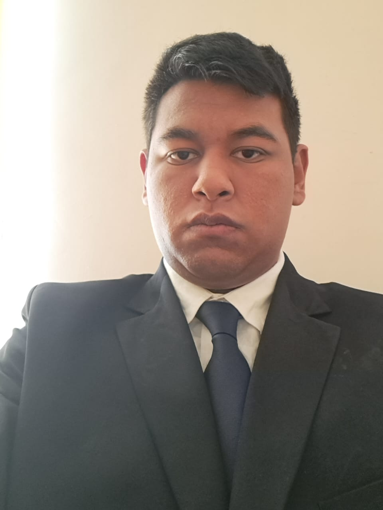

Mi nombre es Erick Martinez Escamilla, yo nací el 1 de febrero de 2004 en Tijuana Baja California en aqullos momentos se llamaba Baja California Norte pero unos años despues cambio el nombre a como hoy en dia, pero hoy en dia vivo en el estado de Hidalgo mas precisamente en un pueblo llamado Texcatepec que pertenese al municipio de Chilcuautla. Yo soy una persona la cual intenta llevarse bien con la mayoria de las personas pero me cuesta hacercarme a conocer personas nuevas y no me gusta salir a fiestas o a tomar fuera de mi casa puesto que prefierpo quedarme si bien algunas veces salgono es muy seguido, me gusta los colores oscuros sobre todo para la ropa, calsado y demas, pero me apasiona muchos los deportes, videojuegos, juegos de mesa y hablar de temas del espacio exteriror tecnologia y demas. Los logros que e conseguido hasta la fecha son pocos se podria decir como haber terminado la preparatoria y poder entrar la universidad, mientras que aun no teniendo muchos amigos con los pocos que tengo es suficiente y el hecho que esten bien me hace sentir feliz ya que llego a ser apegado a las personas que me importan y me agradan.
Como ya habia mensionado antes yo provengo de Tijuana Baja California pero hoy en dia vivo en la comunidad de Texcatepec municipio de Chilcuautla en el Barrio Chavarria el cual es un pueblo muy tranquilo donde ralmente no pasa gran cosa ni se ve mucha sirculacion de carros normalmente es un lugar donde se puede caminar con mucha tranquilidad pero como todo cuando son dias festivos eso cambia puesto que en sus festividades llegan a venir varias personas de otros pueblos que es cuando se traen juegos mecanicos, se prenden los castillos y en ciertas ocasiones hay jaripeos al igual que cuando se resiven a los santos patronales hay posadas junto con sus proseciones, este pueblo es bonito, tranquilo y me gusta vivir aqui ademas que me gusta la manera en que festejan las festividades.
No tenia muchas opciones puesto que no me consideraba bueno para casi ninguna carrera despues de estudiar en la preparatoria un poco de TIC´s me intereso y tome la desicion de entrar a estudia la carrera ademas que una vez profundisando un poco mas lo que es la carrera me intereso mas aun teniendo en cuenta que puede que varias aptitudes no las tenga hoy en dia me esofrsare por desarrollarlas, tambien quiero que mi familia se sienta orgullosa de mi y poder darles un apoyo economico que les pueda a adyudar a tener una vida mas comoda y sobre todo que si llega a haber un inprobisto o llegue a pasar algo grave no tengan que estarse preocupando el como y donde sacar dinero para poder salir adelante frente a esa situacion